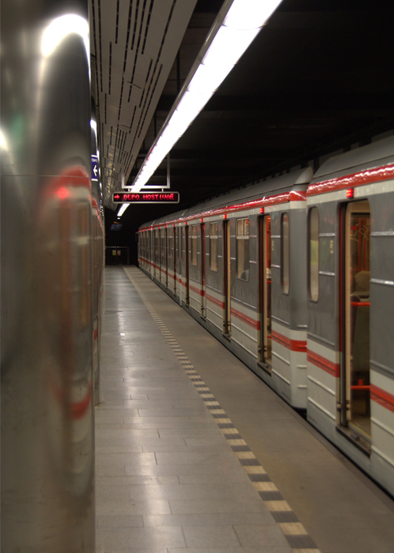

회사소개
연혁
코레일유통(주)
- 2020.10
- 비대면 결제 및 신용카드/각종 페이류 "즉각결제" 도입
- 2019.01
- 중소기업 명품마루 운영
- 2016.01
- 당산동 신사옥 입주(서울시 영등포구 국회대로 612)
- 2015.02
- 소상공인시장진흥공단이 지원하는 '나들가게' 공식 상품공급사 선정
- 2014.07
- CCM(고객중심경영) 인증 획득
- 2013.09
- 지역특산품 매장 개발(고향뜨락)
- 2013.07
- 소상공인과의 상생을 위한 상생물류지원사업 개시
- 2012.05
- 여수세계박람회(엑스포) 식음료 판매시설 운영
- 2011.12
- 직영 커피점 Cafe Storyway 개점
- 2011.08
- 대구세계육상선수권대회 공식 식음료 판매시설 운영
- 2010.09
- PB상품 코레버 4종 개발 출시
- 2008.11
- 코레일애드컴㈜ 인수통합, 광고사업 개시
(주)한국철도유통
- 2006.05
- KTX 열차내 승무서비스사업 종료 및 이관
- 2005.06
- BI 제정(STORYWAY), 영업장 명칭 변경
- 2005.01
- ㈜한국철도유통 출범(재단법인 홍익회의 수익사업, 원호사업 분리)
- 2004.12
- ㈜한국철도유통 설립
(재)홍익회
- 2004.04
- KTX 열차내 승무서비스사업 개시
- 2004.03
- 일반열차 식당차, 스낵카 영업 종료
- 2004.01
- 고속철도역사 상업시설 영업 개시(대전, 동대구, 부산역 등)
- 2002.05
- 2002 한일 월드컵경기장 공식 식음료매장 운영
- 1994.04
- 무궁화호 간이식당차 영업개시(2001년 새마을호로 확대)
- 1984.07
- 콘테이너 하역사업 운영 개시
- 1982.10
- 본부 당산동사옥으로 이전(동자동 → 당산동)
- 1982.07
- 자동판매기 사업 개시
- 1981.01
- 자동보관함 운영 개시
- 1967.07
- 회명 변경 : 재단법인 홍익회
